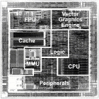

The Hitachi SH7750 (SH-4) CPU is a 32 bit RISC CPU, equipped with a
built in MMU and a very fast floating-point unit.
The Hitachi SH7750 (SH-4) CPU is a 32 bit RISC CPU, equipped with a
built in MMU and a very fast floating-point unit.
- 200 MHz/360 MIPS at 3.3V I/O, 1.8V internal
- 16 x 32-bit general purpose registers
- 32 x 32-bit single-precision floating point registers
- 16-bit fixed instruction length for high code density
- 5 stage pipeline
- On-chip cache, 8KB instruction and 16KB data
- SuperH homepage @ Hitachi
- Programming manual (PDF)
- Hardware manual (PDF)
- Product overview (PDF)
Last modified: Mon Mar 27 16:18:22 MEST 2000